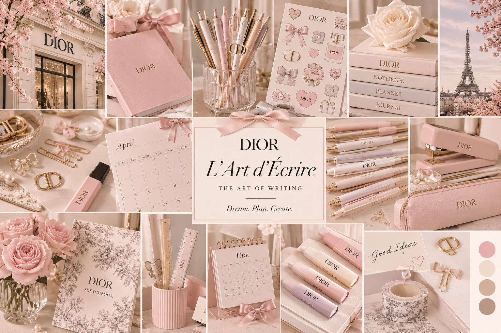
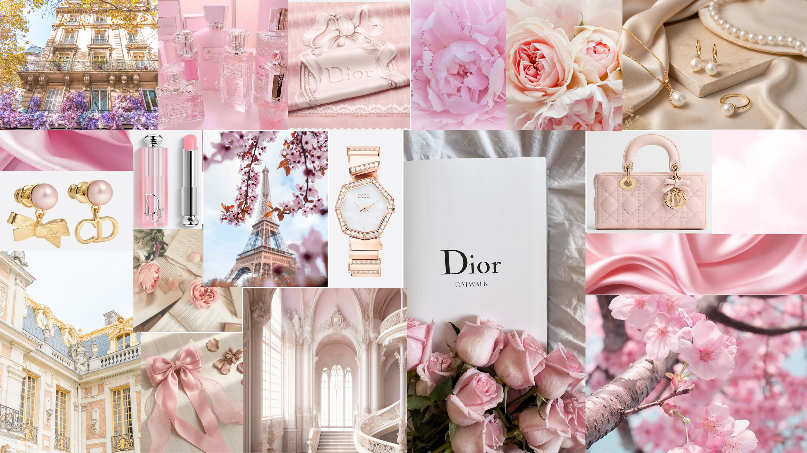

The campaign
L’Art d’Écrire is a Dior stationery collection that turns everyday writing into a ritual. Paper clips, highlighters, rulers, pencils, pens, markers, notebooks, sketchbooks, staplers, diaries, stickers, planners, journals and calendars are all dressed in blush pink, pearl, gold and toile de Jouy.
The line follows three verbs: dream in the sketchbook, plan in the calendar, create with the pen. Every piece feels like a small gift tied with a silk bow.
- Brand
- Christian Dior
- Product
- Luxury stationery and desk accessories
- Audience
- Fashion students, creatives and gift buyers, ages 18 to 35
- Feeling
- Romantic, polished, Parisian
- Tagline
- Dream. Plan. Create.
Moodboard
Over 20 images across two boards. The first is the product world. The second is the atmosphere: Paris, blossom, roses, silk and pearls.


Required reading: The Art of the Fashion Mood Board. Both boards keep one color story and mix objects, textures and places.
Color palette
Sampled from the swatches on the board, plus gold from the clips and pearls.
#E5AFABNotebooks, highlighters, staplers#EFD8C9Paper and packaging#D2AF98Ribbons, pen caps#BC9587Spines, small details#B8975AFoil stamping, clips#2B2326Logo and textFonts
Bodoni Moda
For headlines, product names and taglines. Its high-contrast strokes match the Dior wordmark. Regular for names, italic for “Dream. Plan. Create.”
Jost
For product details, calendar numbers and packaging copy. A light sans that stays quiet beside the serif.
Logomark
A silk bow with a gold knot, taken from the ribbons and bow-shaped clips on the board. It sits beside the Dior wordmark on pens, clips, stickers and covers, the way Monster Eyewear + The Met pair two names.
Primary on Pearl Cream, reversed on Wordmark Ink, and the small version for clips and stickers.